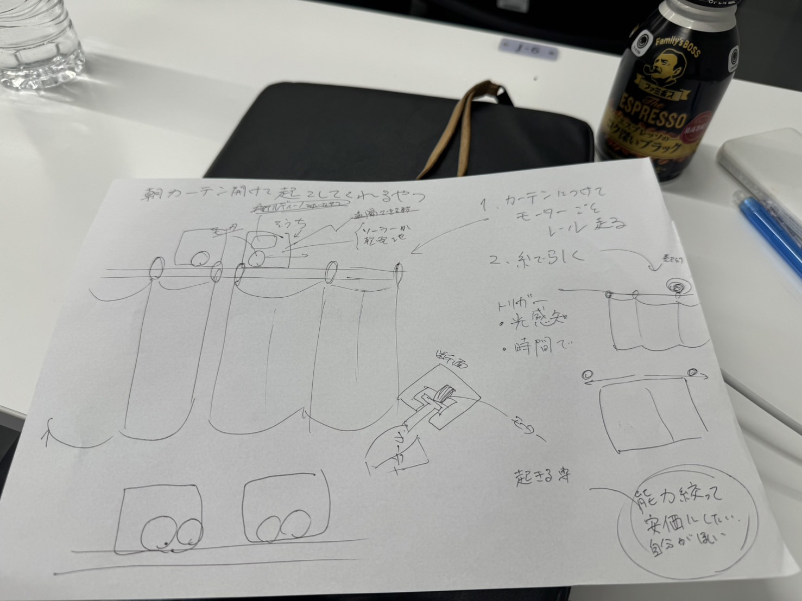

案（2024/05/27
カーテンを自動で開けて自分を起こしてくれるもの

必要なもの:タイヤ、モーター、レール、アーム、aruduino、吊り下げ機
購入品:
モーター類
タイヤは当初購入しようと考えていたが3Dプリンタで製作しようと考え中（TPUなどを使って
実行予定のaruduinoスケッチ
#include
const int stepsPerRevolution = 2048; // モーターのステップ数（28BYJ-48の場合）
// 4つの制御ピン
Stepper myStepper(stepsPerRevolution, 8, 10, 9, 11);
void setup() {
// モーターの速度設定
myStepper.setSpeed(15); // RPM（回転数）
// シリアル通信の開始
Serial.begin(9600);
}
void loop() {
// 1回転（時計回り）
Serial.println("clockwise");
myStepper.step(stepsPerRevolution);
delay(1000);
// 1回転（反時計回り）
Serial.println("counterclockwise");
myStepper.step(-stepsPerRevolution);
delay(1000);
}